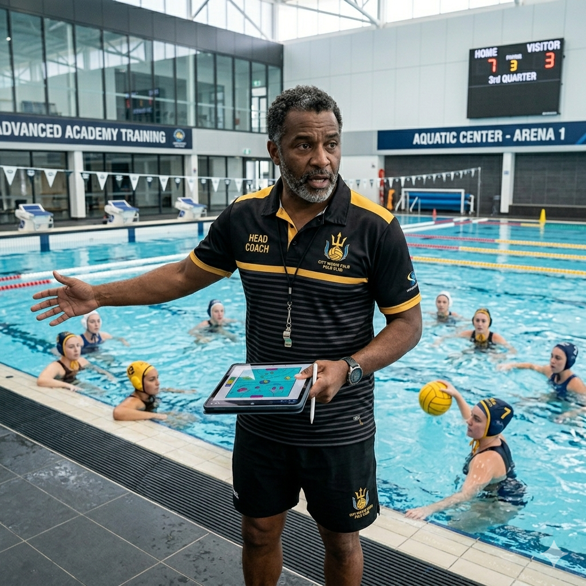
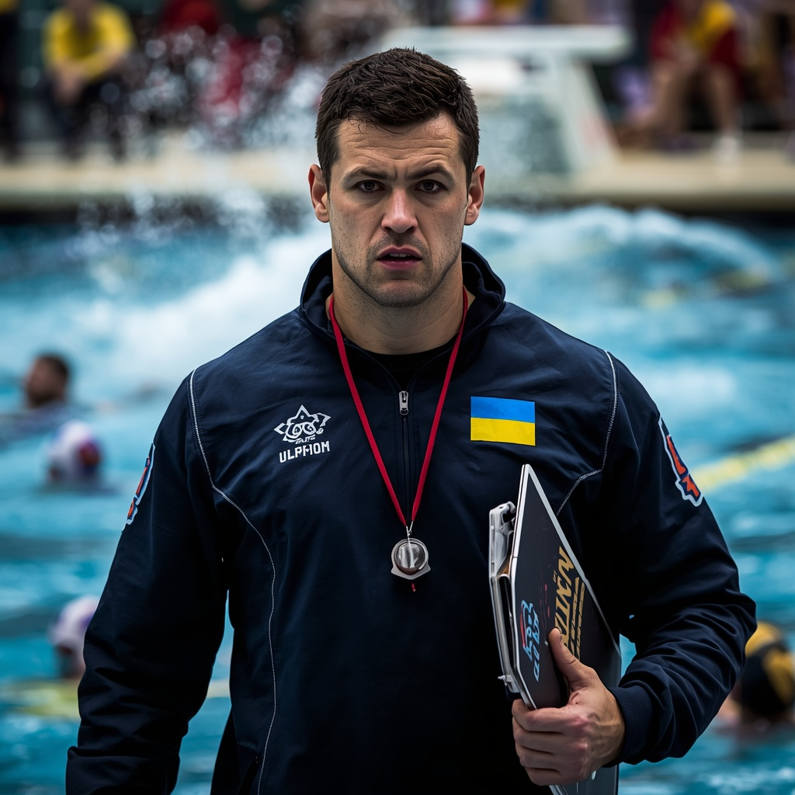
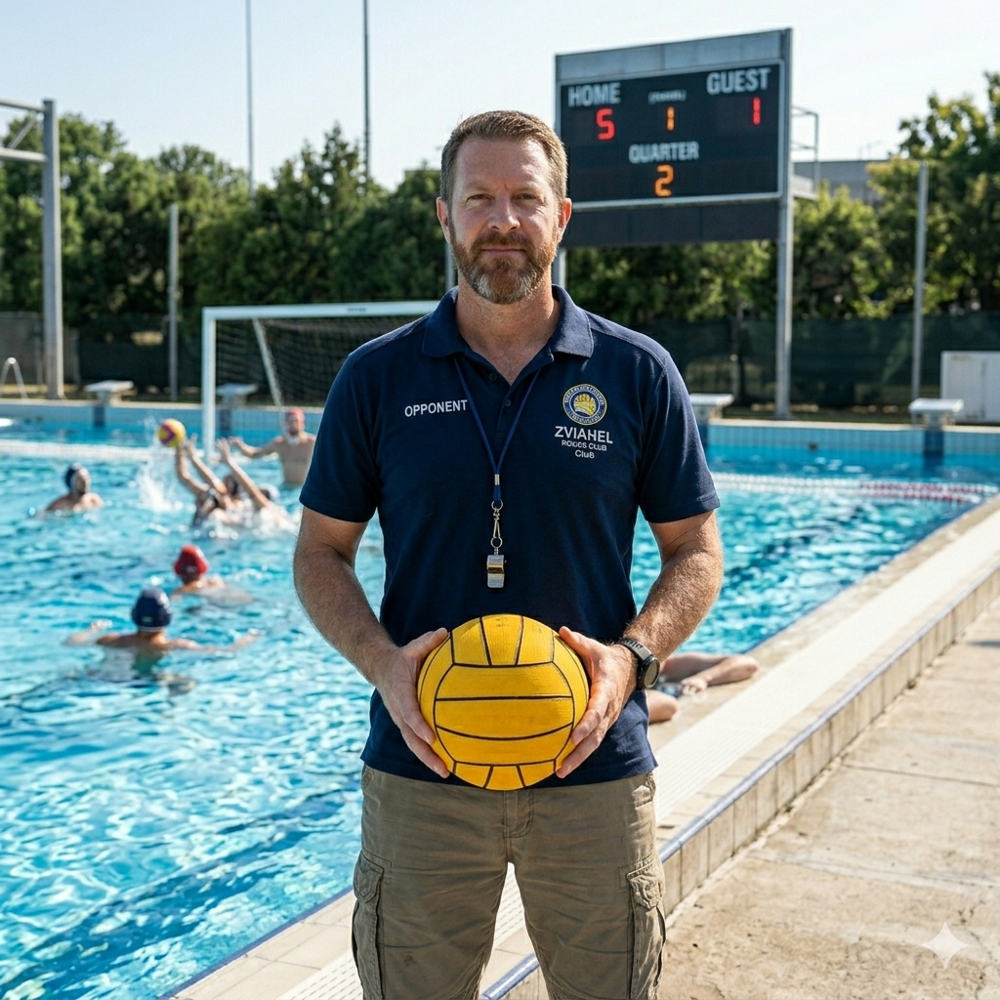
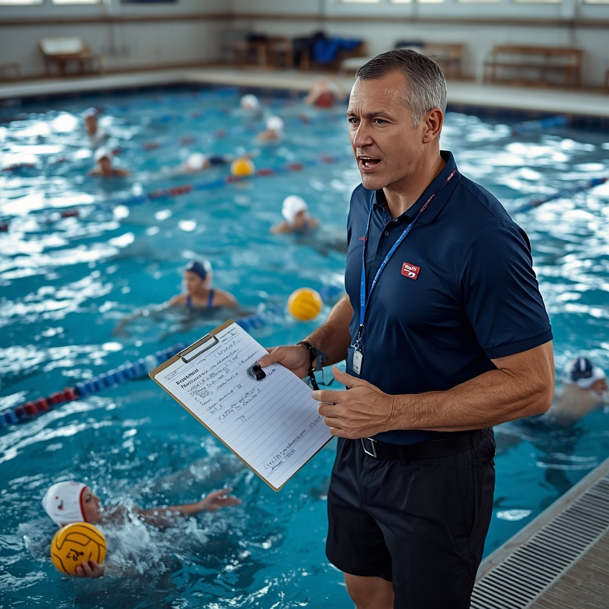
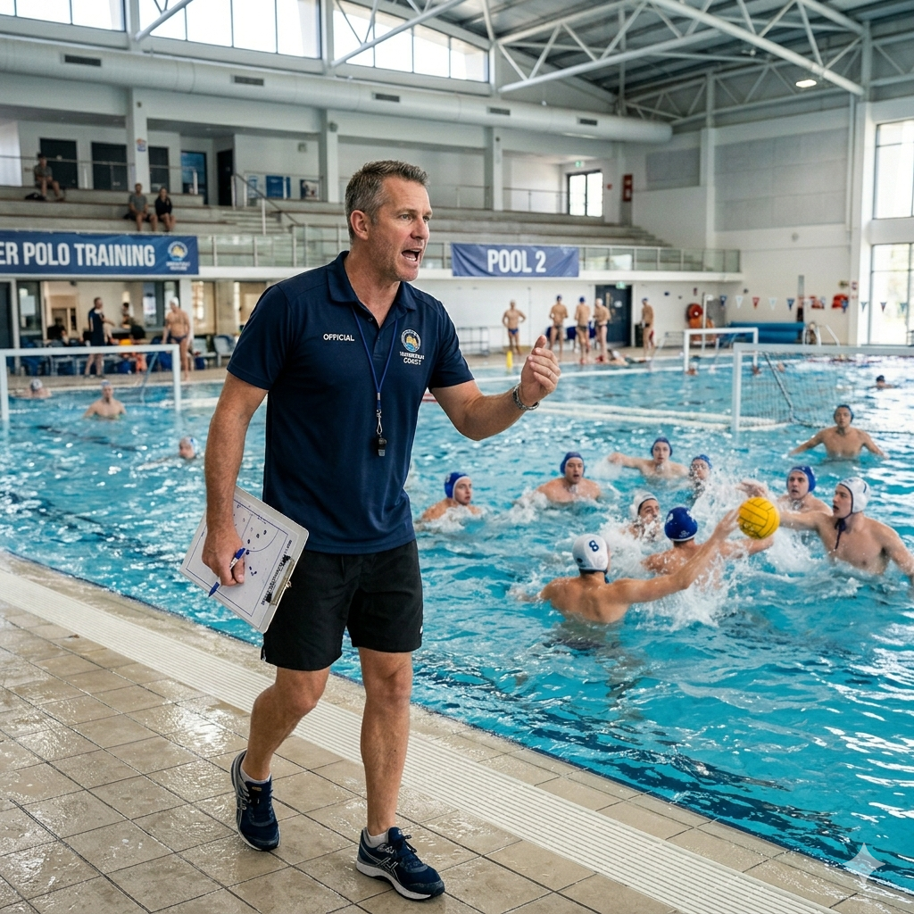

Водне поло — динамічна командна гра у воді, яка виникла в Англії в другій половині XIX століття. Це один із найстаріших олімпійських видів спорту (у програмі з 1900 року). Гра проходить у басейні розміром 30 на 20 метрів для чоловіків, глибина має бути не менше 2 метрів. Найпрестижніші змагання: Олімпіада, Чемпіонат світу та Світова ліга World Aquatics. Водне поло вимагає шаленої витривалості, координації, потужної плавальної бази та сильного командного мислення.


Правила Матч триває 4 періоди по 8 хвилин чистого часу. У воді від кожної команди грають по 7 спортсменів (6 польових та 1 воротар). Мета — закинути м'яч у ворота суперника. Польовим гравцям дозволено торкатися м'яча лише однією рукою, брати обома руками може тільки воротар. Торкатися дна басейну чи топити м'яч під водою під час атаки заборонено. Порушення караються вільним кидком або вилученням на 20 секунд. За три грубих фоли гравець дискваліфікується до кінця поєдинку.
Професіонали, які допоможуть вам досягти ідеального результату

Маркус Джонсон — Водне поло. Досвід: 11 років. Спеціалізація: тактика захисту, пресинг, гра в меншості. Досягнення: майстер спорту, триразовий чемпіон України як головний тренер. Про себе: «Будую залізну тактичну схему в обороні, вчу миттєво перебудовуватися під час контратак суперника».

Сергій Бондар — Водне поло. Досвід: 9 років. Спеціалізація: підготовка нападників, техніка кидків, кидкова витривалість. Досягнення: виховав найкращого бомбардира молодіжного чемпіонату Європи. Про себе: «Поставлю потужний та непередбачуваний кидок з будь-якої позиції у воді».

Дмитро Кравченко — Водне поло. Досвід: 16 років. Спеціалізація: воротарська майстерність, реакція, координація в рамці. Досягнення: колишній голкіпер національної збірної, заслужений тренер країни. Про себе: «Навчу повністю читати траєкторію кидків та надійно закривати ворота».

Олександр Ткаченко — Водне поло. Досвід: 7 років. Спеціалізація: робота з центровими, боротьба на стовпі, силовий пресинг. Досягнення: диплом магістра спорту, вивів юніорський клуб у фінал кубка країни. Про себе: «Вчу домінувати на позиції центрального нападника та вигравати позиційну боротьбу».

Максим Трофимчук — Водне поло. Досвід: 5 років. Спеціалізація: дитячі та юнацькі групи, базова техніка володіння м'ячем. Досягнення: сертифікований тренер для роботи з молоддю, призер студентської ліги. Про себе: «Поєдную драйвові тренування з жорсткою базою, допомагаю дітям швидко закохатися в цей спорт».